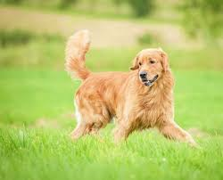
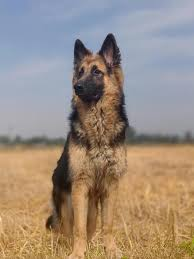
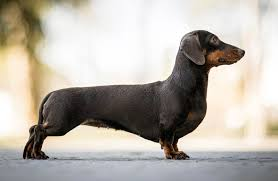

Golden Retriver

German Shepherd

Bull Dog

Poodle

Chihuahua

Dachshund
Further information: Dog anatomy § Senses The left half of the image shows the estimated difference in a dog's vision. Dogs' senses include vision, hearing, smell, taste, touch, and magnetoreception. One study suggests that dogs can feel small variations in Earth's magnetic field.[37] Dogs prefer to defecate with their spines aligned in a north–south position in calm magnetic field conditions.[38]
Dogs' vision is dichromatic; their visual world consists of yellows, blues, and grays.[39] They have difficulty differentiating between red and green,[40] and much like other mammals, the dog's eye is composed of two types of cone cells compared to the human's three. The divergence of the eye axis of dogs ranges from 12 to 25°, depending on the breed, which can have different retina configurations.[41][42] The fovea centralis area of the eye is attached to a nerve fiber, and is the most sensitive to photons.[43] Additionally, a study found that dogs' visual acuity was up to eight times less effective than a human, and their ability to discriminate levels of brightness was about two times worse than a human.[44]
While the human brain is dominated by a large visual cortex, the dog brain is dominated by a large olfactory cortex. Dogs have roughly forty times more smell-sensitive receptors than humans, ranging from about 125 million to nearly 300 million in some dog breeds, such as bloodhounds.[45] This sense of smell is the most prominent sense of the species; it detects chemical changes in the environment, allowing dogs to pinpoint the location of mating partners, potential stressors, resources, etc.[46] Dogs also have an acute sense of hearing up to four times greater than that of humans. They can pick up the slightest sounds from about 400 m (1,300 ft) compared to 90 m (300 ft) for humans.[47]
Dogs have stiff, deeply embedded hairs known as whiskers that sense atmospheric changes, vibrations, and objects not visible in low light conditions. The lower most part of whiskers hold more receptor cells than other hair types, which help in alerting dogs of objects that could collide with the nose, ears, and jaw. Whiskers likely also facilitate the movement of food towards the mouth.[48]
Coat Main article: Dog coat The coats of domestic dogs are of two varieties: "double" being common in dogs (as well as wolves) originating from colder climates, made up of a coarse guard hair and a soft down hair, or "single", with the topcoat only. Breeds may have an occasional "blaze", stripe, or "star" of white fur on their chest or underside.[49] Premature graying can occur in dogs as early as one year of age; this is associated with impulsive behaviors, anxiety behaviors, and fear of unfamiliar noise, people, or animals.[50] Some dog breeds are hairless, while others have a very thick corded coat. The coats of certain breeds are often groomed to a characteristic style, for example, the Yorkshire Terrier's "show cut".[36]
Dewclaw A dog's dewclaw is the fifth digit in its forelimb and hind legs. Dewclaws on the forelimbs are attached by bone and ligament, while the dewclaws on the hind legs are attached only by skin. Most dogs are not born with dewclaws in their hind legs, and some are without them in their forelimbs. Dogs' dewclaws consist of the proximal phalanges and distal phalanges. Some publications theorize that dewclaws in wolves, who usually do not have dewclaws, were a sign of hybridization with dogs.[51][52]
A dog's tail is the terminal appendage of the vertebral column, which is made up of a string of 5 to 23 vertebrae enclosed in muscles and skin that support the dog's back extensor muscles. One of the primary functions of a dog's tail is to communicate their emotional state.[53] The tail also helps the dog maintain balance by putting its weight on the opposite side of the dog's tilt, and it can also help the dog spread its anal gland's scent through the tail's position and movement.[54] Dogs can have a violet gland (or supracaudal gland) characterized by sebaceous glands on the dorsal surface of their tails; in some breeds, it may be vestigial or absent. The enlargement of the violet gland in the tail, which can create a bald spot from hair loss, can be caused by Cushing's disease or an excess of sebum from androgens in the sebaceous glands.[55]